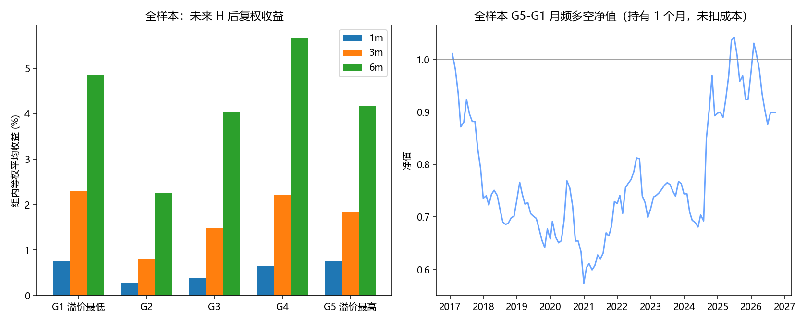
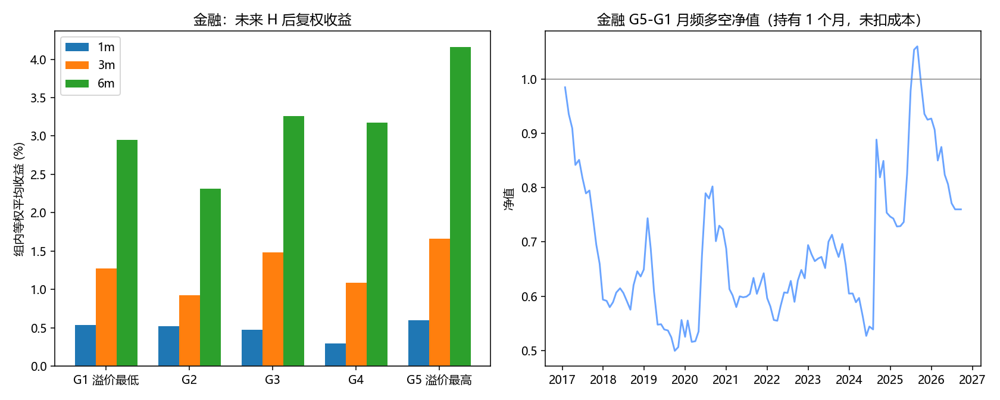
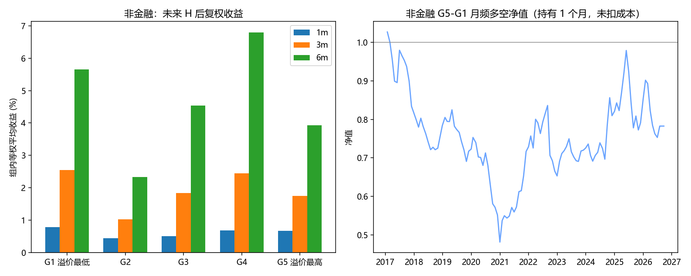

规划 1.0 第 2 步。样本 2017-01-03 起，月末可新开仓，按不复权溢价五等分。G5 为溢价最高（H 最便宜）。收益为 H 后复权，下一交易日收盘买入。金融 / 非金融是在各自池子里重新分组，不是从全样本分组里再拆。
全池一起五等分。信号月数 117，最后信号日 2026-09-21。

| 期限 | G1 | G2 | G3 | G4 | G5 | G5-G1 | t | p | 单调 | IC | ICIR | 月数 |
|---|---|---|---|---|---|---|---|---|---|---|---|---|
| 1m | 0.77% | 0.29% | 0.38% | 0.66% | 0.76% | -0.00% | -0.00 | 0.9993 | 否 | -0.03 | -0.19 | 115 |
| 3m | 2.29% | 0.81% | 1.49% | 2.21% | 1.83% | -0.38% | -0.33 | 0.7404 | 否 | -0.04 | -0.20 | 113 |
| 6m | 4.85% | 2.26% | 4.04% | 5.66% | 4.16% | -0.24% | -0.11 | 0.9131 | 否 | -0.03 | -0.14 | 110 |
只在金融股内部五等分。信号月数 117，最后信号日 2026-09-21。

| 期限 | G1 | G2 | G3 | G4 | G5 | G5-G1 | t | p | 单调 | IC | ICIR | 月数 |
|---|---|---|---|---|---|---|---|---|---|---|---|---|
| 1m | 0.53% | 0.52% | 0.48% | 0.30% | 0.60% | 0.07% | 0.08 | 0.9339 | 否 | -0.09 | -0.23 | 115 |
| 3m | 1.28% | 0.92% | 1.48% | 1.09% | 1.66% | 0.39% | 0.20 | 0.8383 | 否 | -0.10 | -0.22 | 113 |
| 6m | 2.95% | 2.31% | 3.26% | 3.18% | 4.16% | 1.12% | 0.34 | 0.7318 | 否 | -0.04 | -0.10 | 110 |
只在非金融股内部五等分。信号月数 117，最后信号日 2026-09-21。

| 期限 | G1 | G2 | G3 | G4 | G5 | G5-G1 | t | p | 单调 | IC | ICIR | 月数 |
|---|---|---|---|---|---|---|---|---|---|---|---|---|
| 1m | 0.78% | 0.44% | 0.51% | 0.68% | 0.67% | -0.10% | -0.23 | 0.8189 | 否 | -0.02 | -0.11 | 115 |
| 3m | 2.55% | 1.03% | 1.84% | 2.44% | 1.74% | -0.73% | -0.65 | 0.5195 | 否 | -0.02 | -0.10 | 113 |
| 6m | 5.66% | 2.33% | 4.54% | 6.79% | 3.92% | -1.16% | -0.52 | 0.6061 | 否 | -0.01 | -0.07 | 110 |
t / p 为月度序列均值的 Newey-West 检验。1 个月滞后 0，3 个月滞后 2，6 个月滞后 5。未扣交易成本。